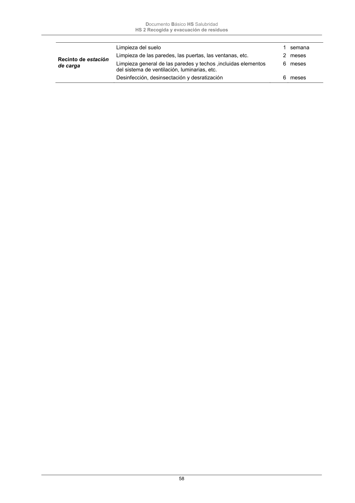
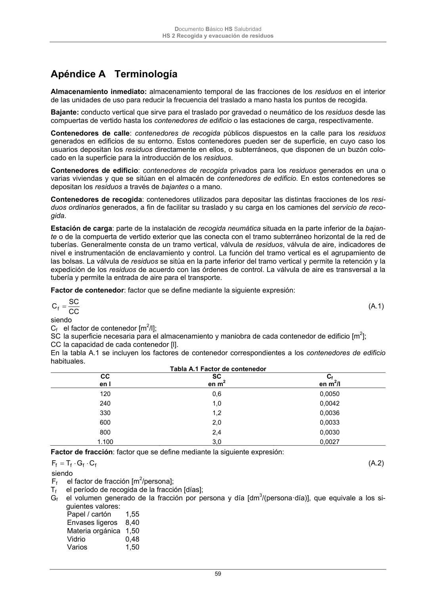

DB-HS Salubridad · edición 2022-06-14 · capa oficial
Documento DB-HS-oficial · SHA-256 del PDF 68df3caacc95f71aee2ec1ba7b2c65ae66155c21e3a8785521b8fdd4fd640d3b
Copia fiel del PDF fuente · Fuente oficial
Ficha de la disposición en la fuente oficial
Formatos: JSON del segmento · Markdown
3.2 Instalaciones de traslado por bajantes 1 Las compuertas deben estar correctamente señalizadas según la fracción correspondiente. 2 En los recintos en los que estén situadas las compuertas deben disponerse, en un soporte indele- ble, junto a otras normas de uso y mantenimiento, las instrucciones siguientes: a) cada fracción debe verterse en la compuerta correspondiente; b) no se deben verter por ninguna compuerta residuos líquidos, objetos cortantes o punzantes ni vidrio; c) los envases ligeros y la materia orgánica deben verterse introducidos en envases cerrados; d) los objetos de cartón que no quepan por la compuerta deben introducirse troceados y no de- ben plegarse. 3 Deben realizarse las operaciones de mantenimiento que, junto con su periodicidad, se incluyen en la tabla 3.2. Tabla 3.2 Operaciones de mantenimiento Operación Periodicidad Bajantes Limpieza de las bajantes por gravedad. Revisión y reparación de los daños encontrados Limpieza de las bajantes neumáticas. Revisión y reparación de los daños encontrados Limpieza de las compuertas de vertido 6 1 1 meses año semana Documento Básico HS Salubridad HS 2 Recogida y evacuación de residuos 58 Recinto de estación de carga Limpieza del suelo Limpieza de las paredes, las puertas, las ventanas, etc. Limpieza general de las paredes y techos ,incluidas elementos del sistema de ventilación, luminarias, etc. Desinfección, desinsectación y desratización 1 2 6 6 semana meses meses meses Documento Básico HS Salubridad HS 2 Recogida y evacuación de residuos 59

